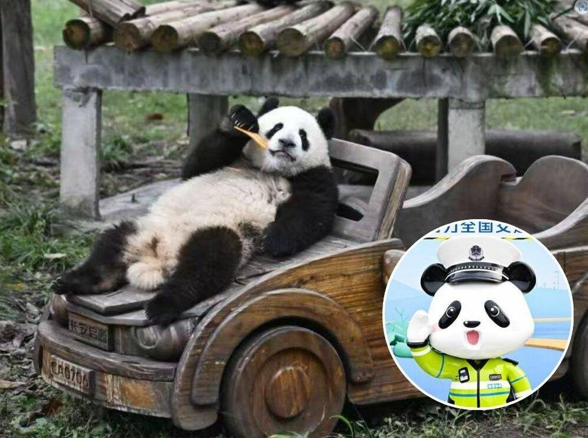
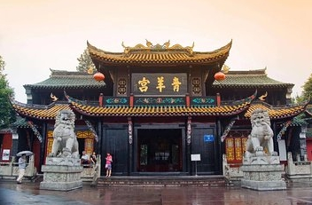
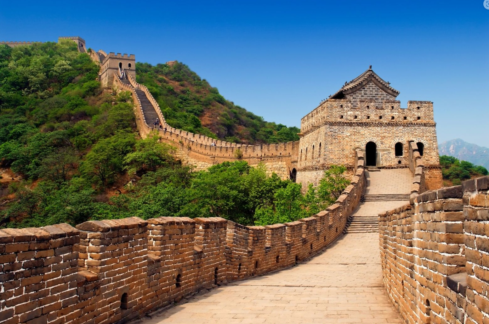
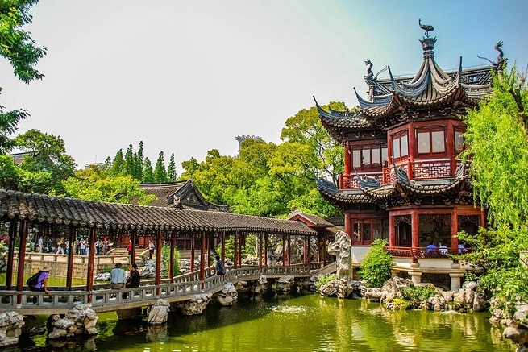

Mi lugar favorito es China (中国)
He visitado varios paises, pero el que mas me ha gustado fue mi viaje a China. Por la mezcla que tienen entre lo tradicional y moderno, y porque me gustan mucho los pandas, siento que son mi animal espiritual jajajaj ¿Porque considero mi lugar favorito? Porque fue un cambio cuando llegue, no se como explicar😔 A continuación muestro algunas ciudades que se suele visitar, pero hay mas ciudades que añadir 😊
Fotos de ciudades
Zhangjiajie

Zhangjiajie me dejó absolutamente maravillado.
picos del Parque Forestal Nacional parecen flotar entre la niebla, como si caminaras dentro de una pintura.
El Puente de Cristal del Gran Cañón impresiona con sus vistas vertiginosas, y el Tianmen Mountain con su carretera serpenteante y la Puerta del Cielo es simplemente inolvidable.
Cada rincón parece sacado de otro mundo, una mezcla perfecta de naturaleza salvaje y magia.
Chengdu
Chengdu me conquistó desde el primer momento.
Ver a los osos panda en la Base de Investigación fue una experiencia tierna e inolvidable.
El Parque del Pueblo tiene una calma deliciosa, perfecta para tomar té y ver la vida pasar.
El Templo Wuhou y el Callejón Jinli mezclan historia y ambiente tradicional con una energía vibrante.
Y por supuesto, la calle Kuanzhai es ideal para perderse entre sabores y artesanías. Una ciudad que te abraza con su ritmo tranquilo y su encanto único.
Beijing
me dejó completamente maravillado.
La Ciudad Prohibida es un viaje directo a la grandeza imperial, con palacios que parecen no terminar nunca.
Caminar por la Gran Muralla en Mutianyu fue impresionante, con vistas que te hacen sentir diminuto ante la historia.
El Templo del Cielo transmite una serenidad especial, y el Palacio de Verano, con su lago y colinas, es un rincón de belleza pura.
Cada lugar tiene una energía única que hace que la ciudad se quede contigo.
Shanghai
Shanghai me fascinó desde el primer instante.
El Bund al atardecer, con sus luces reflejadas en el río Huangpu, es pura magia.
Subir a Pudong y ver la ciudad desde la Torre de Shanghái te deja sin palabras.
El encanto tradicional de los Jardines Yuyuan es un remanso de belleza entre tanta modernidad.
Y perderse por la Concesión Francesa, con sus calles arboladas y cafés con estilo, es una delicia.
Una ciudad vibrante que mezcla futuro e historia de una forma irresistible.